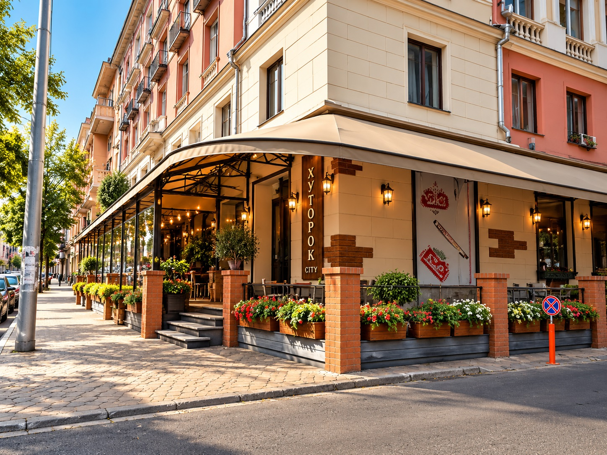
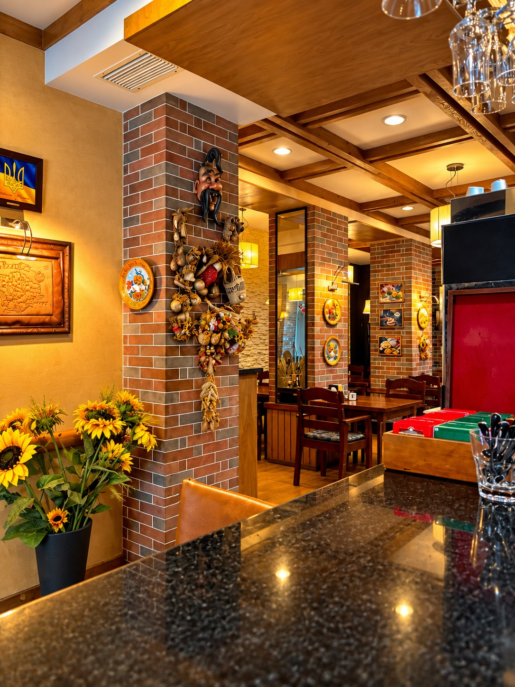
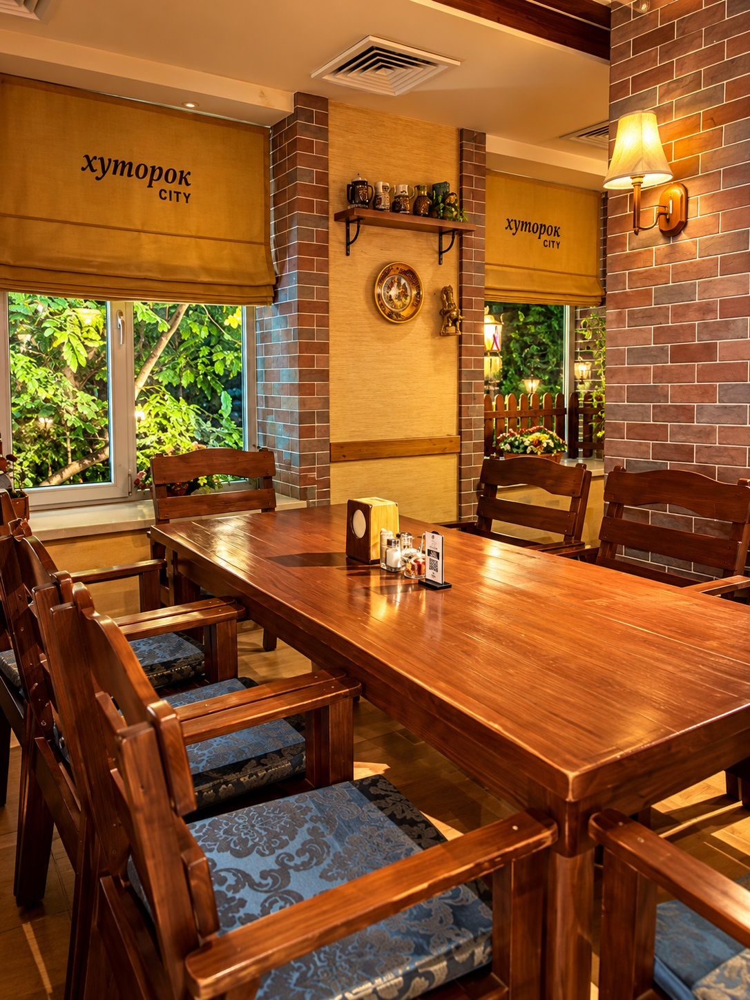
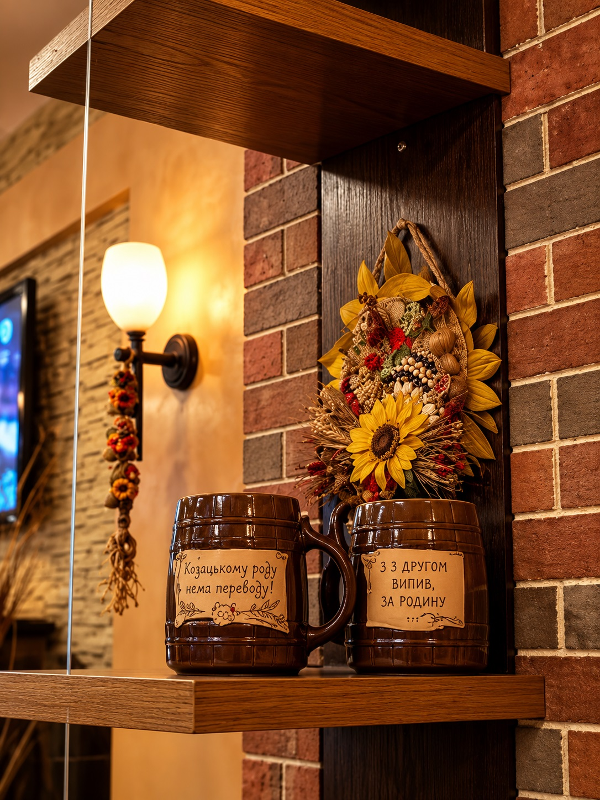
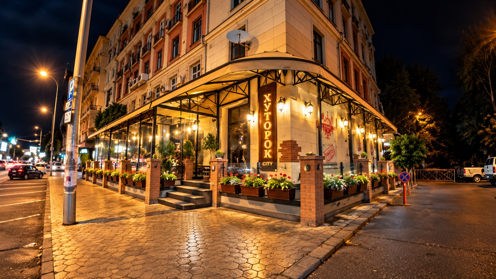
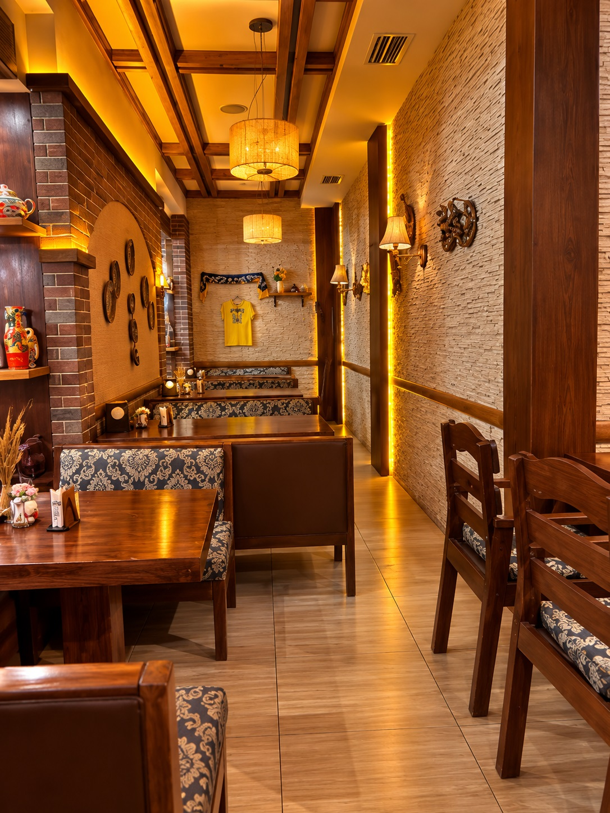

ჩვენი გალერეა
შეიგრძენი ჩვენი ატმოსფერო
ინტერიერის დეტალები, თბილი გარემო და მომენტები, რომლებიც გვაერთიანებს.






ჩვენი გალერეა
ინტერიერის დეტალები, თბილი გარემო და მომენტები, რომლებიც გვაერთიანებს.





